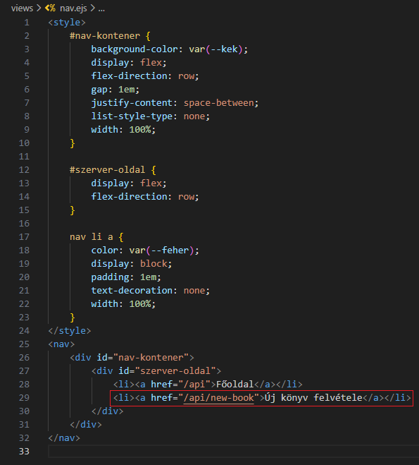
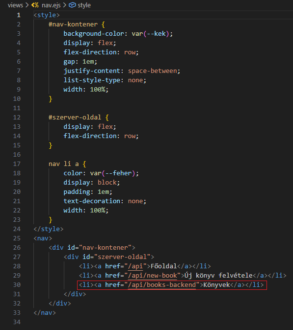
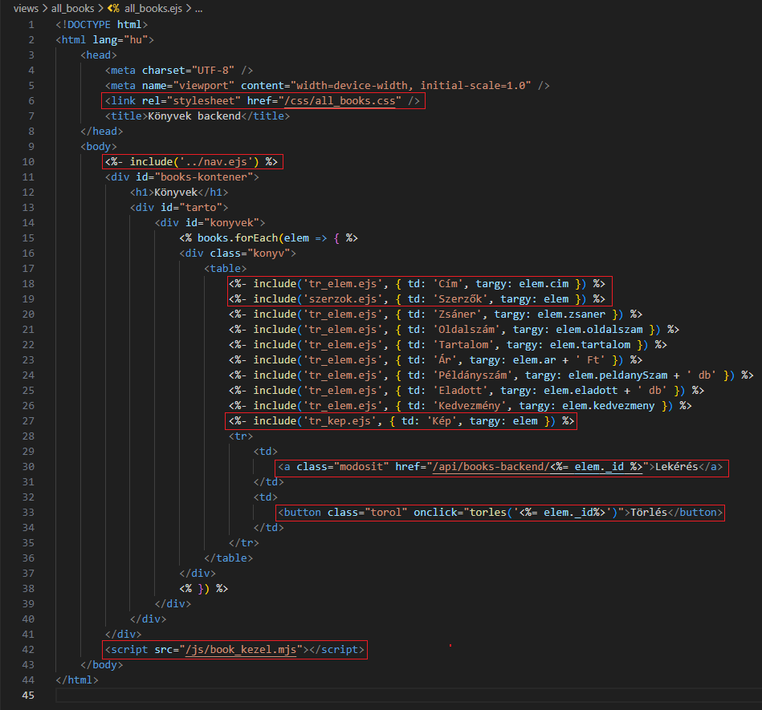
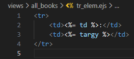
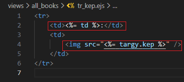
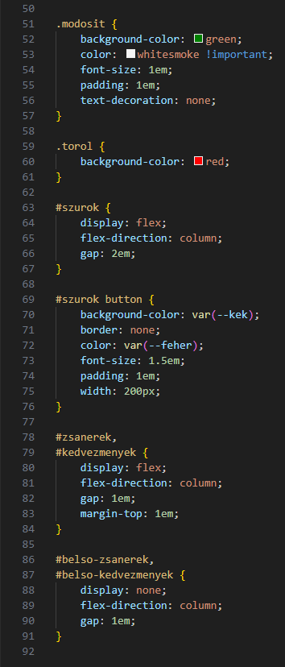
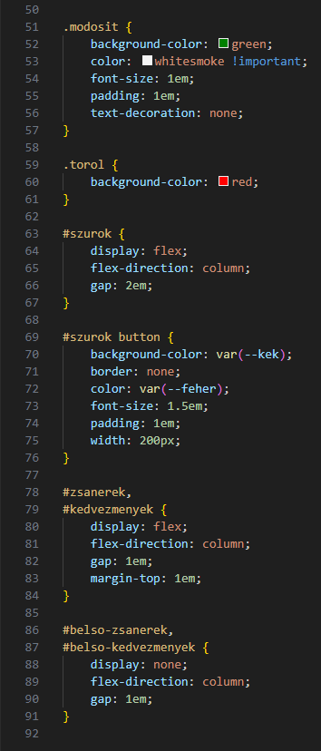

Összes könyv kezelése - all_Books.ejs
Összes könyv kezelése - all_Books.ejs

Ebben a részben szerkesztjük az views/all_books mappában az összes könyv megjelenítéséhez szükséges ejs állományokat.
-
Szerkesszük a
nav.ejsállományt. és -
Szerkesszük az
all_books.ejsállományt.-
<link rel="stylesheet" href="/css/all_books.css" />- mivel aserver.mjsállományban beállítottuk a hivatkozást apublicmappára, ezért minden elemére ilyen speciálisan tudunk hivatkozni. -
<%- include('nav.ejs') %>- beimportálása anav.ejsállománynak. -
<%- include('tr_elem.ejs', { td: 'Cím', targy: elem.cim }) %>- beimportálása atr_elem.ejsállománynak, ahol átadjuk a{ td: 'Cím', targy: elem.cim }objektumot. -
<%- include('tr_kep.ejs', { td: 'Kép', targy: elem }) %>- beimportálása atr_kep.ejsállománynak, ahol átadjuk a{ td: 'Kép', targy: elem }objektumot. -
<%- include('szerzok.ejs', { td: 'Szerzők', targy: elem }) %>- beimportálása azsaner.ejsállománynak, ahol átadjuk a{ td: 'Szerzők', targy: elem }objektumot. -
<a class="modosit" href="/api/books-backend/<%= elem._id %>">Lekérés</a>- a következő részben kidolgozandó elemenkénti lekérése a könyveknek. -
<button class="torol" onclick="torles('<%= elem._id%>')">Törlés</button>- helyezzünk el egyonclick="torles(...)"eseménykezelőt a gombra.
-
-
Szerkesszük a
tr_elem.ejséstr_kep.ejs. és-
<td><%= td %>:</td>- aall_books.ejs-től kapott objektumból kivesszük atdértéket. -
<img src="<%= targy.kep %>" />- aall_books.ejs-től kapott objektumból kivesszük aztargy.kepértéket.
-
-
Szerkesszük a
szerzo.ejsállományt.
-
targy.szerzok- aall_books.ejs-től kapott objektumból kivesszük atargy.szerzokértéket.
-
-
Szerkesszük az
all_books.cssállományt. és 
